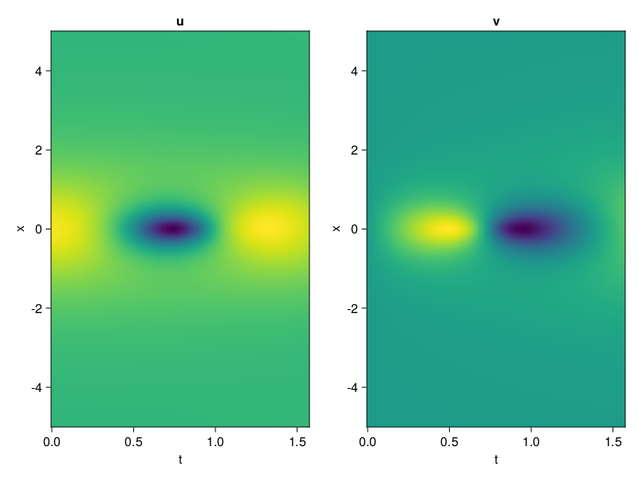
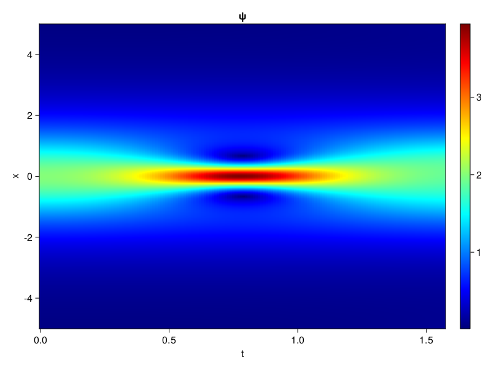

Schrödinger equation
The nonlinear Shrödinger equation is given by
\[\mathrm{i} \partial_t \psi=-\frac{1}{2} \sigma \partial_{x x} \psi-\beta|\psi|^2 \psi\]
Let $\sigma=\beta=1, \psi=u+v i$, the equation can be transformed into a system of partial differential equations
using ModelingToolkit, IntervalSets, Sophon, CairoMakie
using Optimization, OptimizationOptimJL
@parameters x,t
@variables u(..), v(..)
Dₜ = Differential(t)
Dₓ² = Differential(x)^2
eqs=[Dₜ(u(x,t)) ~ -Dₓ²(v(x,t))/2 - (abs2(v(x,t)) + abs2(u(x,t))) * v(x,t),
Dₜ(v(x,t)) ~ Dₓ²(u(x,t))/2 + (abs2(v(x,t)) + abs2(u(x,t))) * u(x,t)]
bcs = [u(x, 0.0) ~ 2sech(x),
v(x, 0.0) ~ 0.0,
u(-5.0, t) ~ u(5.0, t),
v(-5.0, t) ~ v(5.0, t)]
domains = [x ∈ Interval(-5.0, 5.0),
t ∈ Interval(0.0, π/2)]
@named pde_system = PDESystem(eqs, bcs, domains, [x,t], [u(x,t),v(x,t)])\[ \begin{align} \frac{\mathrm{d}}{\mathrm{d}t} u\left( x, t \right) =& - \frac{1}{2} \frac{\mathrm{d}}{\mathrm{d}x} \frac{\mathrm{d}}{\mathrm{d}x} v\left( x, t \right) - \left( \left|u\left( x, t \right)\right|^{2} + \left|v\left( x, t \right)\right|^{2} \right) v\left( x, t \right) \\ \frac{\mathrm{d}}{\mathrm{d}t} v\left( x, t \right) =& \frac{1}{2} \frac{\mathrm{d}}{\mathrm{d}x} \frac{\mathrm{d}}{\mathrm{d}x} u\left( x, t \right) + \left( \left|u\left( x, t \right)\right|^{2} + \left|v\left( x, t \right)\right|^{2} \right) u\left( x, t \right) \end{align} \]
pinn = PINN(u = Siren(2,1; hidden_dims=16,num_layers=4, omega = 1.0),
v = Siren(2,1; hidden_dims=16,num_layers=4, omega = 1.0))
sampler = QuasiRandomSampler(500, (200,200,20,20))
strategy = NonAdaptiveTraining(1,(10,10,1,1))
prob = Sophon.discretize(pde_system, pinn, sampler, strategy)OptimizationProblem. In-place: true
u0: ComponentVector{Float64}(u = (layer_1 = (weight = [-0.49035197496414185 0.43870407342910767; 0.4302248954772949 -0.34126752614974976; … ; 0.07884782552719116 -0.3617682456970215; 0.44879454374313354 -0.39182060956954956], bias = [0.0; 0.0; … ; 0.0; 0.0;;]), layer_2 = (weight = [0.5272579789161682 0.43020305037498474 … 0.10566344857215881 0.28235650062561035; -0.2909734845161438 -0.3847256600856781 … 0.01724906452000141 -0.3831896483898163; … ; 0.5367916226387024 0.21601469814777374 … 0.003511176910251379 -0.22406387329101562; -0.05972037836909294 0.39722537994384766 … 0.4534883201122284 0.25059816241264343], bias = [0.0; 0.0; … ; 0.0; 0.0;;]), layer_3 = (weight = [0.32458508014678955 0.18424087762832642 … 0.07156608998775482 -0.05116559565067291; 0.14752623438835144 -0.3744834065437317 … -0.14537468552589417 0.04165743291378021; … ; -0.21113723516464233 0.014008864760398865 … 0.5797085762023926 -0.11118330806493759; -0.4763699471950531 0.06468535959720612 … 0.29220959544181824 -0.39595723152160645], bias = [0.0; 0.0; … ; 0.0; 0.0;;]), layer_4 = (weight = [-0.04728671535849571 -0.0337294340133667 … -0.3616464138031006 0.2802622616291046; 0.16102167963981628 0.35644856095314026 … -0.23225240409374237 0.1442577838897705; … ; 0.2556188404560089 -0.5569012761116028 … 0.5097050070762634 -0.5077568888664246; -0.30477678775787354 0.4315589666366577 … -0.5519986748695374 0.0695127323269844], bias = [0.0; 0.0; … ; 0.0; 0.0;;]), layer_5 = (weight = [-0.29214397072792053 -0.47124677896499634 … 0.1888882964849472 -0.47679203748703003], bias = [0.0;;])), v = (layer_1 = (weight = [0.21823233366012573 0.192182719707489; -0.33657944202423096 0.34592628479003906; … ; 0.24872511625289917 0.38143235445022583; -0.3031790852546692 0.21999424695968628], bias = [0.0; 0.0; … ; 0.0; 0.0;;]), layer_2 = (weight = [0.4456242024898529 0.13834357261657715 … 0.16261251270771027 -0.5208752155303955; 0.11564852297306061 -0.6107732057571411 … -0.06277894973754883 -0.5768190026283264; … ; -0.18154649436473846 0.2823435962200165 … 0.5210983753204346 0.08491189032793045; -0.5870180130004883 0.4582427740097046 … 0.5856073498725891 -0.20194049179553986], bias = [0.0; 0.0; … ; 0.0; 0.0;;]), layer_3 = (weight = [-0.22816313803195953 -0.0589977465569973 … 0.286126047372818 -0.20060962438583374; -0.25685057044029236 0.5283030867576599 … -0.5903580784797668 -0.19098465144634247; … ; -0.2508578896522522 0.07265058904886246 … -0.17705374956130981 -0.08068618923425674; 0.4990205466747284 -0.20681597292423248 … -0.12388064712285995 0.2003295123577118], bias = [0.0; 0.0; … ; 0.0; 0.0;;]), layer_4 = (weight = [-0.2589450478553772 0.07616731524467468 … 0.1914861649274826 0.4658813774585724; 0.44025683403015137 0.4901045560836792 … 0.4425395727157593 -0.06648175418376923; … ; -0.2793501317501068 -0.5248905420303345 … -0.4871225655078888 -0.448581725358963; -0.20841000974178314 -0.39516720175743103 … -0.579830527305603 -0.1724863350391388], bias = [0.0; 0.0; … ; 0.0; 0.0;;]), layer_5 = (weight = [-0.09592700749635696 -0.5527945756912231 … 0.4852238893508911 -0.05582689866423607], bias = [0.0;;])))Now we train the neural nets and resample data while training.
function train(pde_system, prob, sampler, strategy, resample_period = 500, n=10)
bfgs = BFGS()
res = Optimization.solve(prob, bfgs; maxiters=2000)
for i in 1:n
data = Sophon.sample(pde_system, sampler)
prob = remake(prob; u0=res.u, p=data)
res = Optimization.solve(prob, bfgs; maxiters=resample_period)
end
return res
end
res = train(pde_system, prob, sampler, strategy)u: ComponentVector{Float64}(u = (layer_1 = (weight = [-0.5168344113529247 -0.3145936657421485; 0.16179879786052095 -0.7116067237257931; … ; 0.05123115187124258 -0.43707131521867154; 0.580797002109895 -0.36310738429748757], bias = [0.20489869113043668; 0.5342364788833028; … ; 0.23458147084262013; 0.24871873128700558;;]), layer_2 = (weight = [0.6699111255387351 0.07029952056124537 … -0.12286796628242404 0.13404623884019146; -0.160027193608086 -0.2275623555616031 … 0.03558419787289927 -0.5612648364299407; … ; 0.6142197755718656 0.5251938557326766 … 0.21889229772160482 -0.09865626675416109; -0.25374191713699124 0.46928084394550496 … 0.6112034821110336 0.5271499188708283], bias = [0.04441980436589591; -0.121396935560425; … ; 0.2781369652677634; -0.08389125994828629;;]), layer_3 = (weight = [0.19667399092527488 0.4253224940138393 … -0.25311536576462906 -0.2871193601636333; -0.09528181387233564 -0.6160715608672921 … 0.05325776838212391 -0.06488920046490701; … ; -0.44570433748694566 -0.22240267521737733 … 0.4111887963371913 0.050356049397248956; -0.5634586661485483 0.32469148619984883 … 0.2519799042579017 -0.767351696307435], bias = [0.08129620833524441; -0.3721619825579308; … ; -0.34929772065737674; -0.09307668258793292;;]), layer_4 = (weight = [0.24315160229200725 -0.03520591699368176 … -0.3323127793062634 0.5960961494096175; 0.3943462011677762 0.46019959806831623 … 0.16118796266078128 0.5011798394185375; … ; 0.3333324576343551 -0.9558365413687138 … 0.929574605445503 -0.4234670909287721; -0.3272131069058587 0.649128387600104 … -0.08634527882450443 -0.13573482555473046], bias = [-0.03285508844634374; 0.24326162413172484; … ; 0.010646257919100562; -0.013748721463502473;;]), layer_5 = (weight = [-0.7226987100820916 -0.9622159892093838 … 0.8456691098506134 -1.1402586941166288], bias = [-0.029657276991493033;;])), v = (layer_1 = (weight = [0.4189421788389147 -0.19143661749712026; -0.4571603660005331 0.9138990586809765; … ; 0.6506805024462384 0.17980922741634828; -0.5544560556787819 -0.12178507308427353], bias = [0.18754880313069777; 0.3987976069143648; … ; -0.12709276080685222; 0.05481611271688141;;]), layer_2 = (weight = [0.24324213296964275 0.31954633293450513 … 0.4091658347961487 -0.7036598589714174; 0.17519399700870653 -0.4742835341250431 … 0.011177897841920796 -0.42286231619541553; … ; -0.15100501065158892 0.5491207211499807 … 0.8085939319140535 -0.03454885063996059; -0.6996812098646387 0.29944148259070724 … 0.3383972654471034 -0.09138307365372643], bias = [0.12267321999592253; -0.26453163874533303; … ; 0.23245018813179466; 0.006591094281895587;;]), layer_3 = (weight = [-0.3838536173513687 0.2358871133941225 … 0.029672936067697667 -0.1036309084964577; -0.08555495366038021 0.7732863252661202 … 0.05675214219482264 -0.18102455107375925; … ; -0.29912196048776607 0.3009191487387618 … -0.21981294845277163 -0.22268788991178012; 0.272565716660713 -0.1898906404980639 … -0.3050665387093101 0.032339636952798914], bias = [-0.34839345896222446; 0.032768709246632874; … ; -0.19320325433340932; -0.211333316271033;;]), layer_4 = (weight = [-0.09365250162431749 0.3487309862209812 … 0.21498159112638804 0.6176464084982078; 0.6395912806212176 0.5377726397758685 … 0.20527562371270783 0.02397583367627677; … ; 0.07162792080002285 -0.2017459464146117 … -0.36349350559055416 -0.5256259727242539; -0.18145011028265476 -0.4394472681964363 … -0.376577837355537 -0.033904783141903816], bias = [-0.025720177992132203; -0.16806321500451912; … ; -0.10690667850805265; 0.21320530708263868;;]), layer_5 = (weight = [-0.16212031836341106 -0.1976278240177101 … 0.8913086783287029 0.6542433162407598], bias = [0.00857862740097506;;])))phi = pinn.phi
ps = res.u
xs, ts= [infimum(d.domain):0.01:supremum(d.domain) for d in pde_system.domain]
u = [sum(phi.u(([x,t]), ps.u)) for x in xs, t in ts]
v = [sum(phi.v(([x,t]), ps.v)) for x in xs, t in ts]
ψ = @. sqrt(u^2+ v^2)
axis = (xlabel="t", ylabel="x", title="u")
fig, ax1, hm1 = heatmap(ts, xs, u', axis=axis)
ax2, hm2= heatmap(fig[1, end+1], ts, xs, v', axis= merge(axis, (; title="v")))
display(fig)
axis = (xlabel="t", ylabel="x", title="ψ")
fig, ax1, hm1 = heatmap(ts, xs, ψ', axis=axis, colormap=:jet)
Colorbar(fig[:, end+1], hm1)
display(fig)
Customize Sampling
Bascially any sampling method is supportted. For example we can sample data according to the predicted solution.
using StatsBase
data = vec([[x, t] for x in xs, t in ts])
wv = vec(ψ)
new_data = wsample(data, wv, 500)
new_data = reduce(hcat, new_data)
fig, ax = scatter(new_data[2,:], new_data[1,:])
prob.p[1] = new_data
prob.p[2] = new_data
prob = remake(prob; u0 = res.u)
# res = Optimization.solve(prob, bfgs; maxiters=1000)OptimizationProblem. In-place: true
u0: ComponentVector{Float64}(u = (layer_1 = (weight = [-0.5168344113529247 -0.3145936657421485; 0.16179879786052095 -0.7116067237257931; … ; 0.05123115187124258 -0.43707131521867154; 0.580797002109895 -0.36310738429748757], bias = [0.20489869113043668; 0.5342364788833028; … ; 0.23458147084262013; 0.24871873128700558;;]), layer_2 = (weight = [0.6699111255387351 0.07029952056124537 … -0.12286796628242404 0.13404623884019146; -0.160027193608086 -0.2275623555616031 … 0.03558419787289927 -0.5612648364299407; … ; 0.6142197755718656 0.5251938557326766 … 0.21889229772160482 -0.09865626675416109; -0.25374191713699124 0.46928084394550496 … 0.6112034821110336 0.5271499188708283], bias = [0.04441980436589591; -0.121396935560425; … ; 0.2781369652677634; -0.08389125994828629;;]), layer_3 = (weight = [0.19667399092527488 0.4253224940138393 … -0.25311536576462906 -0.2871193601636333; -0.09528181387233564 -0.6160715608672921 … 0.05325776838212391 -0.06488920046490701; … ; -0.44570433748694566 -0.22240267521737733 … 0.4111887963371913 0.050356049397248956; -0.5634586661485483 0.32469148619984883 … 0.2519799042579017 -0.767351696307435], bias = [0.08129620833524441; -0.3721619825579308; … ; -0.34929772065737674; -0.09307668258793292;;]), layer_4 = (weight = [0.24315160229200725 -0.03520591699368176 … -0.3323127793062634 0.5960961494096175; 0.3943462011677762 0.46019959806831623 … 0.16118796266078128 0.5011798394185375; … ; 0.3333324576343551 -0.9558365413687138 … 0.929574605445503 -0.4234670909287721; -0.3272131069058587 0.649128387600104 … -0.08634527882450443 -0.13573482555473046], bias = [-0.03285508844634374; 0.24326162413172484; … ; 0.010646257919100562; -0.013748721463502473;;]), layer_5 = (weight = [-0.7226987100820916 -0.9622159892093838 … 0.8456691098506134 -1.1402586941166288], bias = [-0.029657276991493033;;])), v = (layer_1 = (weight = [0.4189421788389147 -0.19143661749712026; -0.4571603660005331 0.9138990586809765; … ; 0.6506805024462384 0.17980922741634828; -0.5544560556787819 -0.12178507308427353], bias = [0.18754880313069777; 0.3987976069143648; … ; -0.12709276080685222; 0.05481611271688141;;]), layer_2 = (weight = [0.24324213296964275 0.31954633293450513 … 0.4091658347961487 -0.7036598589714174; 0.17519399700870653 -0.4742835341250431 … 0.011177897841920796 -0.42286231619541553; … ; -0.15100501065158892 0.5491207211499807 … 0.8085939319140535 -0.03454885063996059; -0.6996812098646387 0.29944148259070724 … 0.3383972654471034 -0.09138307365372643], bias = [0.12267321999592253; -0.26453163874533303; … ; 0.23245018813179466; 0.006591094281895587;;]), layer_3 = (weight = [-0.3838536173513687 0.2358871133941225 … 0.029672936067697667 -0.1036309084964577; -0.08555495366038021 0.7732863252661202 … 0.05675214219482264 -0.18102455107375925; … ; -0.29912196048776607 0.3009191487387618 … -0.21981294845277163 -0.22268788991178012; 0.272565716660713 -0.1898906404980639 … -0.3050665387093101 0.032339636952798914], bias = [-0.34839345896222446; 0.032768709246632874; … ; -0.19320325433340932; -0.211333316271033;;]), layer_4 = (weight = [-0.09365250162431749 0.3487309862209812 … 0.21498159112638804 0.6176464084982078; 0.6395912806212176 0.5377726397758685 … 0.20527562371270783 0.02397583367627677; … ; 0.07162792080002285 -0.2017459464146117 … -0.36349350559055416 -0.5256259727242539; -0.18145011028265476 -0.4394472681964363 … -0.376577837355537 -0.033904783141903816], bias = [-0.025720177992132203; -0.16806321500451912; … ; -0.10690667850805265; 0.21320530708263868;;]), layer_5 = (weight = [-0.16212031836341106 -0.1976278240177101 … 0.8913086783287029 0.6542433162407598], bias = [0.00857862740097506;;])))